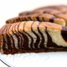

Пирог «Зебра»

Ингредиенты
- Сахар - 2 стакана
- Куриное яйцо - 5 штук
- Сливочное масло - 200 г
- Сметана - 1 банка
- Пшеничная мука - 2 стакана
- Какао-порошок - 2 столовые ложки
- Гашеная сода - 1 чайная ложка
Шаги
- Яйца взбить с сахаром до белой пены. Добавить 2 стакана просеянной муки, соду, растопленное остывшее сливочное масло, сметану и тщательно перемешать (лучше миксером).
- Тесто разделить на две равные части. В одну часть добавить 2 столовые ложки муки, в другую 2 столовые ложки какао. Перемешать, чтобы не было комочков. Тесто должно быть консистенции негустой сметаны.
- Широкую форму (26–28 см), смазать маслом. Вливать в центр поочередно небольшие порции разного теста (по столовой ложке). Не перемешивать.
- Выпекать в предварительно разогретой духовке при температуре 200 градусов в течение получаса. Если верх пирога уже пропечется, а середина еще нет — следует накрыть пирог фольгой, уменьшить температуру до 180 градусов и выпекать до готовности.